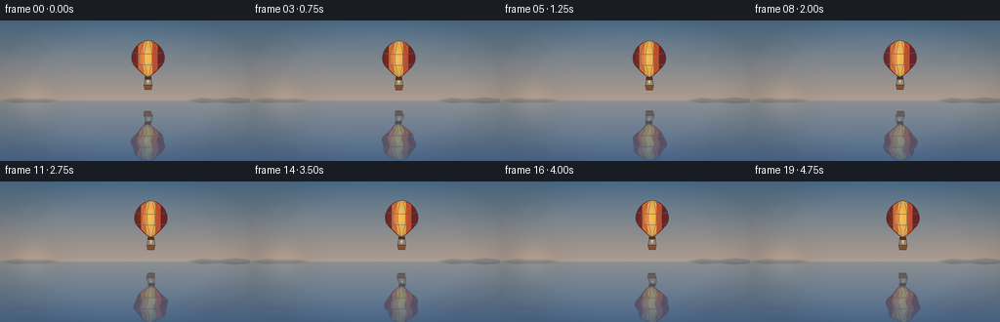
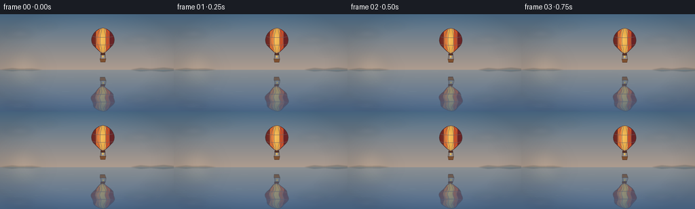

CODING AGENTS AS PIXEL WORLD MODELS
traex/GPT-5.6-Sol · phygen_060
点击播放 · 原生 RGB 像素
逐轮保存的候选
回放视频、检查图与代码变化。
每份候选均可单独播放。实际图片检查记录在下方工具轨迹中。
候选 01播放与检查图
点击播放 · 原生 RGB 像素


展开代码变化
--- 上一保存版本
+++ 本次保存版本
@@ -0,0 +1,222 @@
+from pathlib import Path
+import math
+
+import numpy as np
+from PIL import Image, ImageDraw, ImageFilter
+
+import artifact_io
+
+
+W, H, N = 256, 144, 20
+S = 4
+WW, HH = W * S, H * S
+HORIZON = 82
+
+
+def sc(v):
+ return int(round(v * S))
+
+
+def gradient(top, bottom, height=HH):
+ a = np.linspace(0, 1, height, dtype=np.float32)[:, None, None]
+ c0 = np.array(top, np.float32)[None, None, :]
+ c1 = np.array(bottom, np.float32)[None, None, :]
+ row = c0 * (1 - a) + c1 * a
+ return np.repeat(row, WW, axis=1).astype(np.uint8)
+
+
+def cloud_layer(t):
+ layer = Image.new("RGBA", (WW, HH), (0, 0, 0, 0))
+ d = ImageDraw.Draw(layer, "RGBA")
+ # Very soft, sparse cirrus keeps the view serene.
+ shift = 0.25 * t
+ wisps = [
+ (27 + shift, 29, 42, 5, (244, 228, 217, 34)),
+ (70 + shift * .7, 18, 31, 3, (235, 235, 231, 20)),
+ (205 + shift * .45, 38, 45, 5, (255, 219, 196, 30)),
+ (224 + shift * .4, 55, 25, 3, (255, 224, 205, 24)),
+ ]
+ for x, y, w, h, col in wisps:
+ d.ellipse((sc(x-w/2), sc(y-h/2), sc(x+w/2), sc(y+h/2)), fill=col)
+ d.ellipse((sc(x-w*.25), sc(y-h*.8), sc(x+w*.35), sc(y+h*.6)), fill=col)
+ return layer.filter(ImageFilter.GaussianBlur(sc(4.0)))
+
+
+def balloon_layer(cx, cy):
+ """Detailed hot-air balloon on a transparent supersampled layer."""
+ lay = Image.new("RGBA", (WW, HH), (0, 0, 0, 0))
+ # Envelope silhouette generated from a smooth analytic profile.
+ top, bot = cy - 20.5, cy + 17.0
+ left, right = [], []
+ for j in range(65):
+ u = j / 64
+ y = top + (bot - top) * u
+ # broad upper bulb, tapering decisively into the throat
+ w = 16.7 * (math.sin(math.pi * (u ** .92)) ** .62)
+ w *= (1 - 0.34 * max(0, u - .63) / .37)
+ left.append((sc(cx - w), sc(y)))
+ right.append((sc(cx + w), sc(y)))
+ silhouette = left + right[::-1]
+ mask = Image.new("L", (WW, HH), 0)
+ ImageDraw.Draw(mask).polygon(silhouette, fill=255)
+
+ # Curved vertical color panels, clipped by envelope silhouette.
+ paint = Image.new("RGBA", (WW, HH), (0, 0, 0, 0))
+ p = ImageDraw.Draw(paint, "RGBA")
+ bands = [
+ (-18, -10, (112, 37, 34, 255)),
+ (-10, -4.5, (224, 107, 47, 255)),
+ (-4.5, 4.5, (246, 181, 76, 255)),
+ (4.5, 10, (205, 78, 40, 255)),
+ (10, 18, (105, 35, 38, 255)),
+ ]
+ for x0, x1, col in bands:
+ p.rectangle((sc(cx+x0), sc(top-1), sc(cx+x1), sc(bot+1)), fill=col)
+ # Warm illumination is strongest on the left/central panels.
+ glow = Image.new("RGBA", (WW, HH), (0, 0, 0, 0))
+ gd = ImageDraw.Draw(glow, "RGBA")
+ gd.ellipse((sc(cx-12), sc(cy-17), sc(cx+6), sc(cy+11)), fill=(255, 226, 135, 62))
+ glow = glow.filter(ImageFilter.GaussianBlur(sc(4)))
+ paint = Image.alpha_composite(paint, glow)
+ lay.paste(paint, (0, 0), mask)
+
+ d = ImageDraw.Draw(lay, "RGBA")
+ d.line(silhouette + [silhouette[0]], fill=(69, 38, 38, 230), width=sc(.8), joint="curve")
+ # Panel seams curve naturally from crown to throat.
+ for frac in (-.55, -.24, .24, .55):
+ pts = []
+ for j in range(2, 64):
+ u = j / 64
+ y = top + (bot-top)*u
+ w = 16.7 * (math.sin(math.pi*(u**.92))**.62)
+ w *= (1 - .34*max(0, u-.63)/.37)
+ pts.append((sc(cx + frac*w), sc(y)))
+ d.line(pts, fill=(91, 45, 38, 115), width=sc(.45))
+ # Horizontal load tapes.
+ for u in (.32, .62):
+ y = top + (bot-top)*u
+ w = 16.7 * (math.sin(math.pi*(u**.92))**.62)
+ w *= (1 - .34*max(0, u-.63)/.37)
+ d.arc((sc(cx-w), sc(y-1.8), sc(cx+w), sc(y+2.0)), 4, 176,
+ fill=(93, 47, 38, 110), width=sc(.45))
+ # throat, suspension cables, burner glow, and woven basket
+ d.rectangle((sc(cx-3.2), sc(bot-.2), sc(cx+3.2), sc(bot+2.4)),
+ fill=(91, 48, 35, 255), outline=(54, 35, 32, 255), width=sc(.6))
+ d.line((sc(cx-3), sc(bot+1), sc(cx-4.1), sc(bot+8.3)), fill=(58, 45, 39, 255), width=sc(.55))
+ d.line((sc(cx+3), sc(bot+1), sc(cx+4.1), sc(bot+8.3)), fill=(58, 45, 39, 255), width=sc(.55))
+ d.line((sc(cx-1.5), sc(bot+1.8), sc(cx-2.4), sc(bot+8.3)), fill=(75, 52, 40, 220), width=sc(.35))
+ d.line((sc(cx+1.5), sc(bot+1.8), sc(cx+2.4), sc(bot+8.3)), fill=(75, 52, 40, 220), width=sc(.35))
+ d.polygon([(sc(cx-4.4), sc(bot+8)), (sc(cx+4.4), sc(bot+8)),
+ (sc(cx+3.5), sc(bot+13)), (sc(cx-3.4), sc(bot+13))],
+ fill=(116, 70, 40, 255), outline=(54, 39, 33, 255))
+ for yy in (bot+9.5, bot+11.2):
+ d.line((sc(cx-3.8), sc(yy), sc(cx+3.8), sc(yy)), fill=(193, 132, 69, 180), width=sc(.35))
+ # Tiny burner flame.
+ d.ellipse((sc(cx-1), sc(bot+3), sc(cx+1), sc(bot+6)), fill=(255, 201, 75, 210))
+ return lay
+
+
+def reflected_layer(balloon, phase):
+ """Mirror the balloon around the waterline, then add tiny wave refraction."""
+ arr = np.array(balloon)
+ out = np.zeros_like(arr)
+ hy = sc(HORIZON)
+ for y in range(hy, HH):
+ src = 2 * hy - y - 1
+ if 0 <= src < HH:
+ # Increasing horizontal shimmer with depth, but remain recognizable.
+ depth = (y-hy)/S
+ shift = int(round(S * (0.20 + .018*depth) * math.sin(.42*depth + phase)))
+ out[y] = np.roll(arr[src], shift, axis=0)
+ fade = max(.28, .83 - depth/105)
+ out[y, :, 3] = (out[y, :, 3].astype(np.float32) * fade).astype(np.uint8)
+ # cooler water color
+ out[y, :, 0] = (out[y, :, 0].astype(np.float32) * .80).astype(np.uint8)
+ out[y, :, 1] = (out[y, :, 1].astype(np.float32) * .88).astype(np.uint8)
+ out[y, :, 2] = np.minimum(255, out[y, :, 2].astype(np.float32) * .94 + 8).astype(np.uint8)
+ return Image.fromarray(out, "RGBA").filter(ImageFilter.GaussianBlur((.22*S, .35*S)))
+
+
+def make_frame(i):
+ t = i / (N-1)
+ # Sky transitions from slate blue through lavender to pale peach.
+ arr = gradient((78, 111, 139), (247, 190, 145))
+ im = Image.fromarray(arr, "RGB").convert("RGBA")
+ im = Image.alpha_composite(im, cloud_layer(t))
+
+ # Low sun haze at the horizon, away from the balloon.
+ haze = Image.new("RGBA", (WW, HH), (0, 0, 0, 0))
+ hd = ImageDraw.Draw(haze, "RGBA")
+ hd.ellipse((sc(7), sc(55), sc(60), sc(107)), fill=(255, 204, 146, 28))
+ haze = haze.filter(ImageFilter.GaussianBlur(sc(12)))
+ im = Image.alpha_composite(im, haze)
+
+ # Distant islands establish the horizon while retaining lots of open water.
+ land = Image.new("RGBA", (WW, HH), (0, 0, 0, 0))
+ ld = ImageDraw.Draw(land, "RGBA")
+ ld.polygon([(0, sc(81.9)), (sc(18), sc(79.9)), (sc(29), sc(81.1)),
+ (sc(46), sc(80.4)), (sc(61), sc(82.1)), (0, sc(82.3))], fill=(91, 109, 112, 100))
+ ld.polygon([(sc(193), sc(82)), (sc(207), sc(79.8)), (sc(222), sc(81.0)),
+ (sc(241), sc(79.3)), (WW, sc(80.8)), (WW, sc(82.5))], fill=(83, 102, 108, 105))
+ land = land.filter(ImageFilter.GaussianBlur(sc(.65)))
+ im = Image.alpha_composite(im, land)
+
+ # Mirror-like ocean is a vertical reflection of the sky, subtly cooled.
+ base = np.array(im.convert("RGB"))
+ hy = sc(HORIZON)
+ for y in range(hy, HH):
+ src = max(0, min(HH-1, 2*hy-y-1))
+ row = base[src].astype(np.float32)
+ dep = (y-hy)/(HH-hy)
+ row = row * np.array([.78-.05*dep, .88-.06*dep, .96-.02*dep]) + np.array([4, 7, 10])
+ base[y] = np.clip(row, 0, 255)
+ im = Image.fromarray(base, "RGB").convert("RGBA")
+
+ # Balloon drifts slowly and bobs, with reflection obeying the same geometry.
+ cx = 151.5 + 5.0*t
+ cy = 40.8 - .7*t + .65*math.sin(2*math.pi*t)
+ balloon = balloon_layer(cx, cy)
+ reflection = reflected_layer(balloon, phase=i*.34)
+ im = Image.alpha_composite(im, reflection)
+ im = Image.alpha_composite(im, balloon)
+
+ # Fine calm ripples: mostly near-horizontal and low-contrast.
+ rip = Image.new("RGBA", (WW, HH), (0, 0, 0, 0))
+ rd = ImageDraw.Draw(rip, "RGBA")
+ rng = np.random.default_rng(9017)
+ for k in range(52):
+ y = HORIZON + 2 + rng.random() * 59
+ x = rng.random() * 256
+ length = 3 + rng.random() * (5 + (y-HORIZON)*.20)
+ alpha = int(8 + rng.random()*13)
+ dx = 1.1*math.sin(i*.29 + k*1.73 + y*.11)
+ warm = k % 3 == 0
+ col = (255, 220, 177, alpha) if warm else (184, 218, 225, alpha)
+ rd.line((sc(x+dx-length/2), sc(y), sc(x+dx+length/2), sc(y)), fill=col, width=max(1, sc(.28)))
+ # A crisp, quiet horizon line and a few waves through the reflection.
+ rd.line((0, sc(HORIZON+.15), WW, sc(HORIZON+.15)), fill=(241, 205, 171, 58), width=sc(.35))
+ for q, yy in enumerate((103, 111, 121, 133)):
+ center = 153 + 5*t + 2*math.sin(i*.3+q)
+ half = 12 + q*3
+ rd.arc((sc(center-half), sc(yy-1.0), sc(center+half), sc(yy+1.0)), 185, 355,
+ fill=(232, 207, 173, 22-q*2), width=max(1,sc(.3)))
+ im = Image.alpha_composite(im, rip)
+
+ # Gentle vignette focuses the scene without making it gloomy.
+ yy, xx = np.mgrid[0:HH, 0:WW]
+ nx = (xx-WW/2)/(WW/2)
+ ny = (yy-HH/2)/(HH/2)
+ vig = np.clip((nx*nx + ny*ny - .55)*.12, 0, .10)[..., None]
+ rgb = np.array(im.convert("RGB"), dtype=np.float32)
+ rgb *= (1-vig)
+ final = Image.fromarray(np.clip(rgb,0,255).astype(np.uint8)).resize((W,H), Image.Resampling.LANCZOS)
+ return np.array(final, dtype=np.uint8)
+
+
+def main():
+ frames = np.stack([make_frame(i) for i in range(N)], axis=0)
+ artifact_io.save(frames, Path(__file__).resolve().parent)
+
+
+if __name__ == "__main__":
+ main()
可观测工具轨迹
实际执行的命令与返回图片。
命令 1exit 0
/bin/bash -lc "cat prompt.txt && printf '\\n--- RULES ---\\n' && cat GENERATION_RULES.md && printf '\\n--- SPEC ---\\n' && cat task_spec.json"
命令 2exit 0
/bin/bash -lc "find . -maxdepth 2 -type f -printf '%p\\n' | sort | head -200"
命令 3exit 0
/bin/bash -lc 'cat artifact_io.py'
命令 4exit 0
/bin/bash -lc 'python generate.py'
命令 5exit 0
/bin/bash -lc "python - <<'PY'
import numpy as np
z=np.load('pixels.npz')['pixels']
print(z.shape,z.dtype)
# Decode and summarize temporal change
f=((z.transpose(2,0,1)[...,None] >> np.array([16,8,0])) & 255).astype(np.uint8)
print('mean frame-to-frame absdiff:', np.abs(f[1:].astype(int)-f[:-1].astype(int)).mean(axis=(1,2,3)).round(3).tolist())
print('rgb range', f.min(axis=(0,1,2)).tolist(), f.max(axis=(0,1,2)).tolist())
PY"命令 6exit 0
/bin/bash -lc 'ls -lh pixels.npz index.html inspection.png frames/00.png frames/19.png && git status --short'
视觉工具实际返回图片 1

视觉工具实际返回图片 2
保存候选 1 份；完成命令 6 次；可验证图片返回 2 张。原始 API 响应与完整日志保留在本地。